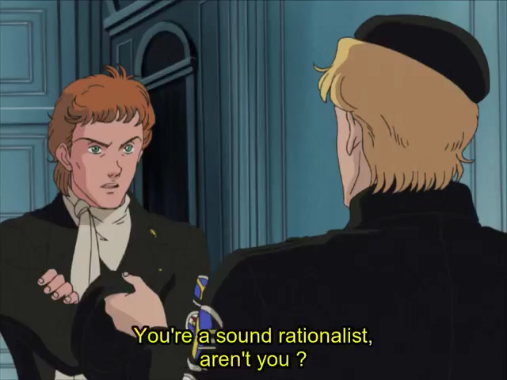

author: niplav, created: 2019-04-02, modified: 2020-07-25, language: english, status: in progress, importance: 3, confidence: highly likely
A description of this website and its author.
This website contains essays on different topics, ranging from programming over philosophy to discussions of odd social behavior, as well as translations, transcriptions, music recordings and programming projects. It follows the idea of Long Content: pages that are continually getting refined and updated, never quite completely finished, but approaching stability. This allows for "perpetual drafts", along with continuous improvement (similar to a wiki, but mainly edited by one person).
This is inspired by the idea of Long Content, produced under the motto
Think Less Wrong, act Long Now and Suck Less.
– paraphrasing Gwern Branwen, “About This Website”, 2019
For this reason, articles are not published by date, but rather by category, both to make it easier to read the content of the site in order (i. e. to "Start at the Beginning") and to structure it by topic and form, rather than to strive for presenting mainly new information to the reader.
The content on this website is licensed under Creative Commons 4.0.
The essays contain mainly new material, both short arguments and collections of links, but also longer descriptions of new ideas or analyses of concepts where existing descriptions (e.g. on Wikipedia or other blogs) were deemed incomplete. It is of course not possible to avoid replicating existing ideas (it is not possible for me to read anything beyond a slim part of existing texts on a topic before writing my own ideas down), but it seems likely that the idea will at least be new to most readers.
Generally I use the rule: Let t be the time it would take to write a
text about the idea I was thinking about. Then the time spent researching
whether the idea exists already should stop take at most $\frac{t}{2}$.
There are, of course, some essays that were written about existing and well-known ideas. These were written mainly for my own enjoyment.
It seems possible that archiving content has a much bigger impact than creating new content. Given that I write mostly for self-expression, it is a small factor in most of what I do, but occasionally I transcribe or translate texts in order to make them more easily accessible.
The translations are often intertwined with the effort of learning other languages or exercising language skills that would otherwise be forgotten. For that reason, they can be of quite low quality, so I'm always grateful for corrections sent my way.
This site also acts as a central place of organisation for different programming related projects and contributions. That includes pages representing programming projects, but also literate programs containing code, comments, tests and performance measurements. Most programs will be written in a small number of programming languages.
I always had a few ideas I thought were worth preserving, and a lot of ideas I thought would be fun writing down, and also thought about creating a repository for all my personal projects, but somehow these never really pushed me completely toward actually setting something up. A good reason might have been that I only visited sites that were poorly organised and contained little to no personal long-term content (either blogs focused on new posts or simply haphazard aggregations of short ideas (like in the form of 2f30.org or the suckless.org wiki)).
This was changed upon discovering gwern.net and reducing-suffering.org: both gave me a good idea of how a long-term website should look and feel like, and which kind of content could be published there.
I decided to start writing down my ideas, collecting older texts and reviewing them to see what was still valuable and what was useless.
My decision to start a website was solidified by guzey 2019 and a question on /r/slatestarcodex:
What's the bottleneck to more things like "Slate Star Codex" or Gwern's site existing in the world?
– arikir, “What's the bottleneck to more things like "Slate Star Codex" or Gwern's site existing in the world?” on /r/slatestarcodex, 2019
I decided that it could not hurt to try and follow through on the idea of aggregating the stuff I produced, and a possible (but unlikely) benefit to other people was just a nice addition.
So far, writing for a website has been beneficial to interacting with several topics: It streamlines my thoughts, makes it possible to take notes, include code and images and several other advantages. Even if I had never gotten around to publishing this site, it would still have been a net positive project for me.
The style of writing is mostly formal US english.
*– [Author Name](https://en.wikipedia.org/wiki/Author_Name), [“Chapter” in “Work Name”](https://work-name.com) p.1, Year*. If the work is not online, link the Wikipedia page.*– [User_Name](https://old.reddit.com/u/User_Name), [“Post Title”](https://old.reddit.com/r/all/post_title/) in [/r/all](https://old.reddit.com/r/all) (100 upvotes), Year**– [User_Name](https://old.reddit.com/u/User_Name), [comment](https://old.reddit.com/r/all/post_title/deadbeef) on [“Post Title”](https://old.reddit.com/r/all/post_title/) in [/r/all](https://old.reddit.com/r/all) (100 upvotes), Year*[Author Year](./title_author_year.pdf)[Author&Coauthor Year](./title_author_coauthor_year.pdf)[Author et al. Year](./title_author_et_al_year.pdf)[home](./index.html)I use a script to fix easily catchable mistakes.
For every text, there are several tags attached to it (mainly taken from Gwern 2019).
The "author" tag is quite self-explanatory, the field is the original author of the piece. This is only relevant for translations and transcriptions.
Similarly, there are two optional tags: "translator" for the person who translated the text, and "transcriptor" for the person who transcribed the text. The former can be me or a professional translator, the latter is always me.
A page has several date tags. The creation date ("created") shows the date when the text was first created (if the text is by me) or when the text was first published (if the text is by another author). If it is unclear when the text was first published, I give my best estimate for the year, and set the date to the first of January of that year. The "modified" tag always shows the date of the last modification by me. Both the "created" and the "modified" tag are present on every text.
If the text is a translation, the "translated" tag shows the date when I started working on the translation. Similarly, the also optional "transcribed" tag shows when I started working on the transcription of the text.
The date format is ISO 8601, rarely using a "-" as a negative sign for a year before the Common Era.
The language tag shows the languages the body of the text is written in (if necessary, separated by commas). Currently, there are only texts in English and German, but the tag may be one of the following:
The confidence tags are also taken mainly from Gwern 2019.
I made some additions to the list of tags which I thought were useful: "translation" for translations, "transcription" for transcriptions (digitalizing of a book or article written on paper), "theory" for unfalsifiable ideas that nonetheless might create new perspectives and approaches, "other" for texts that might not fit into any of these categories.
The complete list of confidence tags is as follows:
The status tags indicate the state of progress for a piece.
They may be any of the following (in increasing order of being-finished-ness):
The importance tags are also taken from Gwern 2019, but I don't do any resorting, both because that would be too much effort and because I believe that most of the content I produce is not especially important.
The importance tag is a number $n \in [10] \subset \mathbb{N}$.
The website is built writing the articles in
Markdown
and them compiling them to standard HTML using
markdown_py. Mathematical formulae
are typeset using MathJax. It
only uses only minimal CSS (highlighting code and quotes, centering the
text and limiting line length) and very litte JavaScript. The Javascript
is used for MathJax and converting headers to anchor links.
This site is greatly influenced by several websites: The style of organisation and presentation is shamelessly influenced by gwern.net and reducing-suffering.org (although achieving similar quality in content, breadth and depth will be diffficult). I try to follow the concept of Long Content and extensive presentation.
My views on philosophy are heavily influenced by the rationalist movement, and I stay faithful to the ideas of the movement by disagreeing sharply with it on several points. The general principles I broadly agree with are consequentialism, bayesian epistemology, meta-physical nominalism, reductionism and scientific naturalism.

My views on ethics are very similar to (and influenced by) the idea of suffering focused ethics, especially the writings at reducing-suffering.org.
In regard to software, my views are quite similar to those of the minimalist unix and Plan 9 supporters at suckless.org and cat-v.org.
I'm most happy with they/them.
Contact address is niplav@posteo.net.
PGP public key:
-----BEGIN PGP PUBLIC KEY BLOCK-----
mQENBFxjMzUBCAD1GrTHAZ+K50WTzvZJBoUiXhnqIDO7mHpdsD9bpNDGFLudeQKE
5BjTV4F4Sfp8BxQU3uo9WUGqPWpYsWZ5VHyYbFoQUZaXulDslwNOfLY4vlT6SLHN
5aoLHVDnZQ7wP44nsubIu4iDVUWpKCSQBaxSLku9u1eINlGshXVPlQbxwWoHpxS1
Wkpo3wVI8RKDVNuCnSJhUPdYz9L/yIIm833UJ/sSuv6DM3VVKZxNqCB7XJq8qXdg
JwaOIMzPiJAnJSvIedOAo5JKDdQNpQ1e7thufPRZVG0vOxt8c+zO8eajMiiG6yMk
PMPNaRuKfv/2wZVX/37sIwaHIgj7NxknHix1ABEBAAG0Gm5pcGxhdiA8bmlwbGF2
QHBvc3Rlby5uZXQ+iQFUBBMBCAA+FiEEuOHrdbohn8dtrXQGKf5C00UfR10FAlxj
MzUCGwMFCQPCZwAFCwkIBwIGFQoJCAsCBBYCAwECHgECF4AACgkQKf5C00UfR12Q
bwf+LpmGTGKThsOx0yycplid03ws4sbdXYlEnfzWMgemiJqa4jmwmcExHGhbNbnq
wdz7bnXY2qa8oG3mJW/vqWbFIkv8k96bPTshaHg9JzoelooSkmG3rrtSPuKYebrC
cJN3eyRERGU39oFJGqPLytVlv9XshLBHvZKA4WRZe6iBco++YRRPk8OLfY4GFXrC
68DQZof/MLYjYqHxsm9y4eGLhT3MjbgKnFeia0J3XvGnKfAsbQpKGdRkJaOG3ht4
04jb0QHja/3+Px1+iVL0k405IZ1rxiYmstQ1pa3OTQ4HhoB37BMb6R4sKIF8AyMP
WGw2ZtikL7HiQZdc3o2I1HLCXrkBDQRcYzM1AQgAucsvQoAi/bYfEKcTtUPt4EqM
z2NUkwPCOFJxTu5sSIgTioZbXAlHeCCIXAUVi8sUK496Ymmf5cLjqw8rUeSVorL6
Eh9bB6S+gDn8/RlWgqU377pK4f6SIuOCHo1vHcLJ9YeIpwv660KgHci3J40lcTpz
7oTlJNu3NxU+F53o+YO5IGOmuNsokXpeCERnnpJpEjaqE+IdyYaAxVHfxcwbUODu
ZhA9hkmdYMn9pNiSiSFSNpCSS/D9ZS4+UWV3602IfKegGt6V1W89W78QA1mzALze
I1GmpgqlQM5Z/BmKL/zH3NC4rwBTqU62oaf0XZlgIWaM6SbdCZaK4IxDgTDcBwAR
AQABiQE8BBgBCAAmFiEEuOHrdbohn8dtrXQGKf5C00UfR10FAlxjMzUCGwwFCQPC
ZwAACgkQKf5C00UfR12icwgAlIpsa66lxUEQrMk27V9fXH89h540Y7W3n2rssDKb
bY1D8gtfbnQ3Uhs+Sy+XtKSSfpLlI8qVmYfW1UFmyViYkh3bWmT3lQo4ap/JTACm
bkA6Gxj91lMqwJMUxSTEgAPaZwkvPB2I2PMWuLBjjsXdA3Y/i64kPPRDO+Exxewi
DxfYMGTQf89lrPifvT5y78NL6S8FqHcGeWrwEXsuumg0RDC7uBm9PC5DFEtZQmxP
AxRVmda5oa7eNp72JTYpkbna9n6v6QLpWsbr702tKgJmj8NS1QMx+YKFw5U9eP4x
INanMfBMaiGYGd1BKfd6xJfapLLRimDp6nUbaVMimNo99w==
=9nws
-----END PGP PUBLIC KEY BLOCK-----